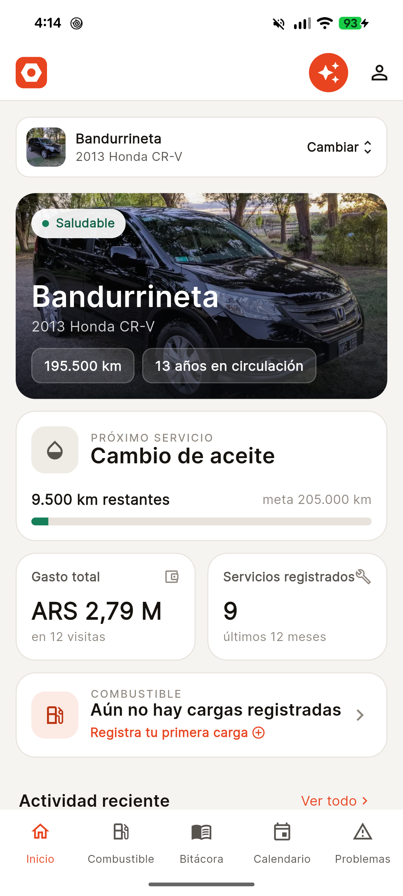

Todo lo que le hacés a tu auto, en un solo lugar.
Los services, las cargas de nafta y el kilometraje quedan anotados. Tuerquita calcula cuándo corresponde el próximo service y te avisa por mail antes de que se te pase.
Todavía no está publicada. Cuando salga, este botón lleva directo a la ficha de la app.

La bitácora completa
Cada service queda anotado: qué se hizo, en qué taller, a cuántos kilómetros y cuánto costó.
Cuánto rinde de verdad
Anotá dos cargas seguidas y Tuerquita empieza a calcular el consumo real, no el del folleto.
Avisos por kilómetro
Los recordatorios salen del kilometraje que anotás, no de una fecha inventada. Te llegan por mail.
El manual, en un chat
Subí el PDF del manual de tu auto y preguntale lo que necesites saber.
Cómo funciona
Tres cosas de tu parte. El resto lo hace la app.
Cargá tu auto
Marca, modelo, año y el kilometraje de hoy. Si querés, una foto. Con eso ya alcanza para arrancar.
Anotá lo que le hacés
Un service, una carga de nafta, un ruido raro. Fecha, kilometraje y lo que gastaste. Treinta segundos.
Dejá que te avise
Tuerquita cruza el kilometraje con el último service y te manda un mail cuando el próximo se acerca.
Responde con lo que dice tu manual, no con lo que hay en internet.
Subí el PDF del manual de tu auto una vez. Después preguntá qué aceite lleva, cada cuántos kilómetros va la distribución o qué significa esa luz del tablero. Si el manual no lo dice, Tuerquita te lo aclara en vez de inventarlo.
Manual del propietario · página 214
Preguntas
Empezá con el kilometraje de hoy.
No hace falta tener el historial cargado. Anotá el próximo service y a partir de ahí Tuerquita se acuerda por vos.
Android por ahora. iOS más adelante.